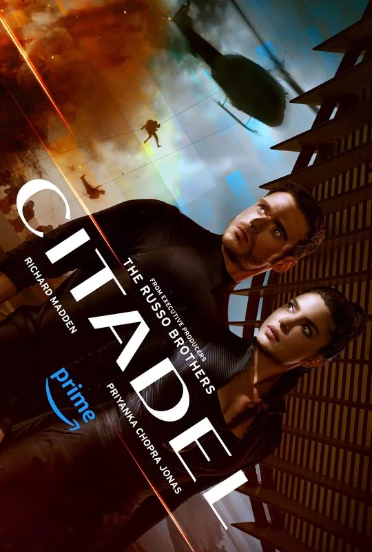

AI & ComfyUI Pipelines
Production generative AI workflows, custom inpainting nodes, and next-gen VFX pipelines.
Production Workflow Graph
ComfyUI VFX Production Pipeline Graph
Full interactive visual graph. Click image to open high-resolution zoom in Lightbox.
Interactive Demo
Plate Inpainting: Rig Removal with ControlNet + LaMa
Slide to compare the raw live-action plate with tracking markers against the AI generative inpaint with preserved film grain.

Raw Plate + Tracking Markers
AI Inpainted Clean Plate
◀▶
Production ComfyUI Workflows
PLATE INPAINTING
ComfyUI + LaMa
Automated 4K Clean-Plate Generator
Converts roto tracking markers and harness wires into seamless 4K background textures without seam artifacts or optical degradation.
Inputs: Live Plate + Roto Matte
Outputs: 16-bit Float EXR Clean Plate
RELIGHTING / COMP
Marigold + IC-Light
Depth-Guided Shot Relighting
Derives photoreal metric depth maps and surface normals directly from 2D footage to cast directional rim lights, specular glints, and volume fog.
Nodes: Marigold Depth, IC-Light, VHS
Outputs: Normal Pass + Rim Key Light